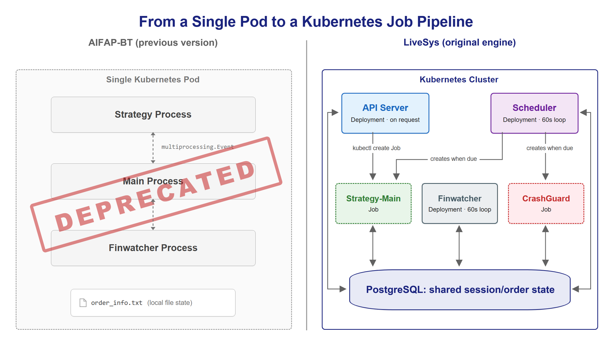
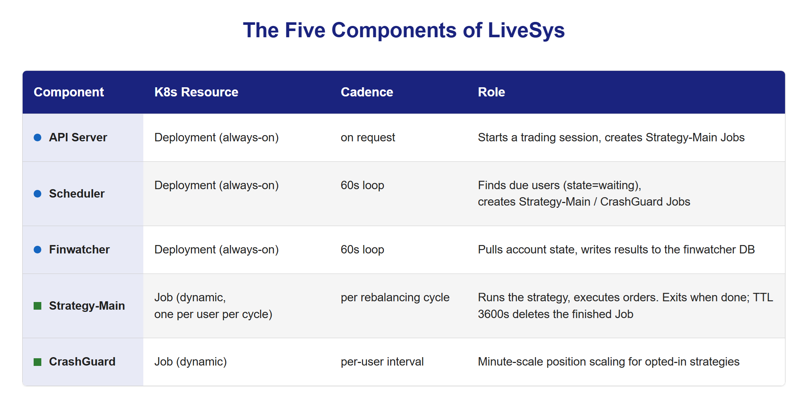
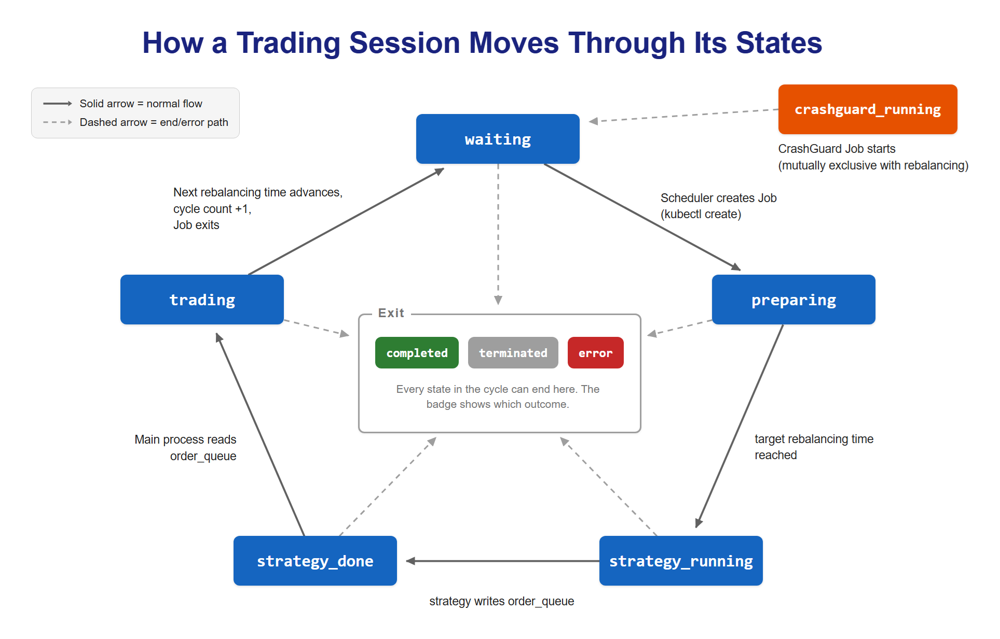
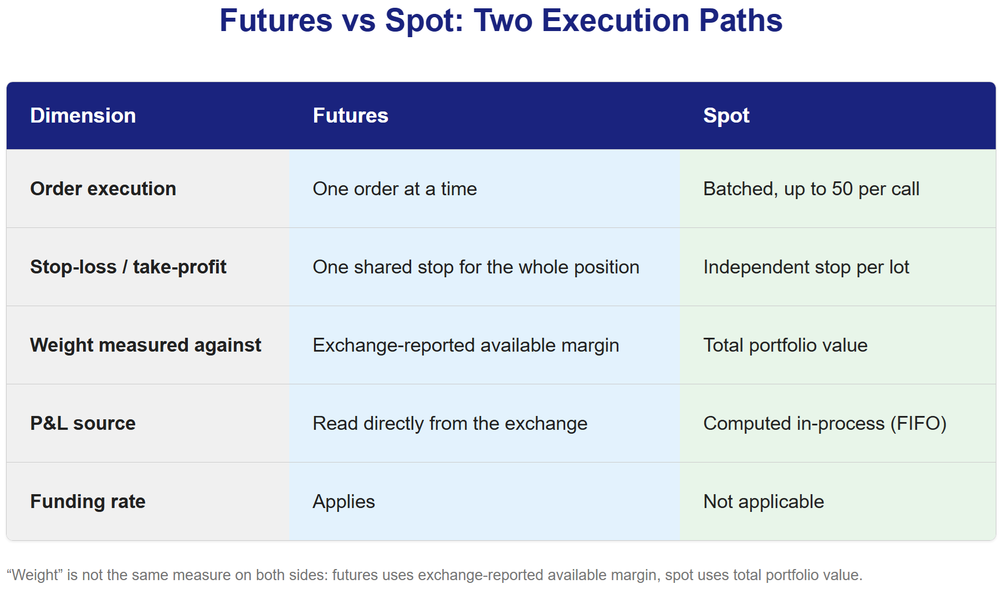
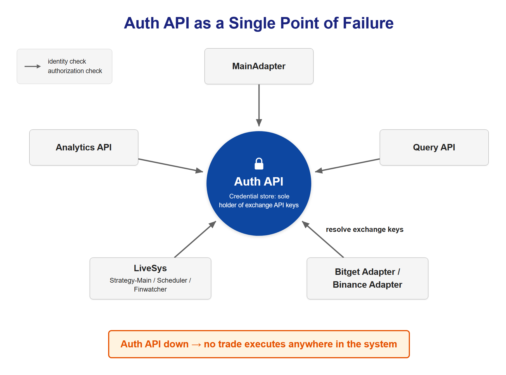

Real money moved through three OS processes talking over a text file. Here's why we rebuilt it on Kubernetes.
We're Axiom, the team that builds and runs this trading system. The part that actually touches real money is LiveSys, our live automated trading engine. This post describes the engine as it ran production for most of its life, built around one exchange account running one strategy. A newer core, Compositor, has since taken over production, and the next post covers it.
What LiveSys Does
Strip away the infrastructure and LiveSys does something simple: a user uploads a trading strategy, LiveSys runs it on a schedule, compares the strategy's target portfolio weights against what's currently held on the exchange, and places the orders needed to close the gap. Then it watches the account, logs what happened, and does it again next cycle.
Today that means Bitget, live. Binance integration is in progress. The routing layer already supports it, but some Binance futures endpoints are intentionally not yet switched on. None of that changes the story below. It's about how the engine that runs those cycles is built, not which exchange it's pointed at this week.
If you're reading this as an investor rather than an engineer, the part that should matter to you is less about Kubernetes and more about what Kubernetes buys us: a live trading engine where "what is my account doing right now" is always an answerable question, backed by a database row. The rest of this post covers how we got there and what we deliberately left unsolved for now.
Why the Old Model Had to Go
The previous version of this system, internally called AIFAP-BT (AI Finance Agent Platform – Bitget), ran as a single Kubernetes Pod that spawned three separate OS processes with subprocess.Popen: one for the strategy, one for order execution ("Main"), one for monitoring ("Finwatcher"). The three talked to each other with multiprocessing.Event signals, and the handoff between the strategy process and the execution process went through a local file, order_info.txt.
It worked, but it had the failure mode you'd expect from any system where state lives in a process's memory and a file on a Pod's local disk: if the Pod died mid-cycle, the state died with it. There was no clean way to ask "what is this account doing right now?" from outside the Pod, and no natural place to plug in a second kind of scheduled job (like a crash-scaling routine) without adding a fourth process to the same subprocess soup.
The rebuild replaces all of that with two ideas. First, every unit of work is either a Kubernetes Job (runs once, terminates) or a long-running Deployment (never terminates). Nothing is a bare subprocess anymore. Second, all state lives in the finplatform Postgres database, specifically three tables: active_sessions, order_queue, and job_history. A Pod can die and get rescheduled and the system still knows exactly which state a given user's trading cycle was in, because that state was never inside the Pod to begin with. This is a formalized industry principle: the Twelve-Factor App methodology's disposability principle holds that a process should be replaceable at any moment without anything depending on it staying alive. The old file-and-memory model never had that property. The Job-plus-database model does.

Five Components, One Postgres Database
LiveSys is five pieces of Kubernetes working off the same three database tables:
- API Server: a Deployment, always running. Handles requests to start a trading session and creates Strategy-Main Jobs on demand.
- Scheduler: a Deployment, always running, looping every 60 seconds. It finds users whose state is
waitingand due for their next cycle, and creates the Strategy-Main (or CrashGuard) Job for them. - Strategy-Main: a Job, created dynamically, one per user per cycle. This is where the actual strategy runs and orders get placed. It exits when its work is done, and a TTL of 3600 seconds removes the finished Job object an hour later.
- Finwatcher: a Deployment, always running, looping every 60 seconds. It pulls each account's current state from the exchange and writes results into the separate
finwatcherdatabase. - CrashGuard: a Job, created dynamically on a per-user interval, for accounts whose strategy opts into minute-scale position scaling.
Nothing here is a bare OS subprocess. Deployments stay up and loop; Jobs spin up, do one unit of work, and exit. That last part matters operationally: once a Strategy-Main Job finishes, successfully or not, its TTL clears the finished Job object out on its own. Nobody has to remember to go delete a stale one. The TTL is a cleanup timer for Jobs that have already ended. It does not stop a Job that is still running.

Inside a Rebalancing Cycle: The State Machine
Here's what happens when a cycle runs, end to end.
A cycle starts when a run request comes in. The API Server checks auth, validates the uploaded config, checks a resume guard (reject the request if this user is already running), and then upserts a row in active_sessions with state='waiting'. Immediately after that, it issues a kubectl create for that user's Strategy-Main Job.
From there, the Job itself drives the rest of the transitions. It sets state='preparing' first. From that moment the Scheduler, which only picks up sessions in waiting, skips this user on its next 60-second tick. It waits for any running CrashGuard Job to clear, then waits until the target rebalancing time arrives. Then:
state='strategy_running': the uploaded strategy executes and writes its target weights toorder_queue.state='strategy_done': the strategy's work is finished and its orders are waiting inorder_queue.state='trading': Main readsorder_queueand executes the actual orders against the exchange.- On completion,
nextRebalancingTimeadvances,totalCyclesincrements by one, andstatereturns towaiting. The Job then exits, its TTL removes the finished Job object an hour later, and the Scheduler creates the next Job when this user is next due.
The delicate moment is the gap before preparing: the Job exists, but the row still says waiting. Three things cover it. Before creating a Job, the Scheduler looks for a Job record for the same user from the last few minutes. It also checks that a recorded Job's pod actually exists, so a record whose pod never appeared can't block a user forever. And a lock keeps the two Scheduler replicas from working the same tick at once. What isn't there is an atomic claim on the session row, so the protection is layered rather than absolute. The order logic is built so that a rare duplicate isn't catastrophic: every cycle computes its orders as the difference between the target and what the exchange reports holding right now, so running a cycle twice in a row doesn't stack a position. Two cycles running at the very same moment could still overlap, and that is a gap the design accepts rather than closes.
The full set of states a session can be in is: waiting, preparing, strategy_running, strategy_done, trading, crashguard_running, completed, terminated, error. That last three are the exit states, and the error policy is deliberately tiered: a user error on a brand-new session (first cycle) triggers liquidation and session termination, since there's no track record yet to preserve. A user error on a session that's already run several cycles keeps the session alive and just notifies the user. A bad cycle doesn't have to mean tearing down a working strategy. A system-level error (not the user's code) also keeps the session alive, but pages an admin instead.
That asymmetry didn't ship this way on the first attempt. It went through three revisions. The earliest version terminated every unrecoverable error unconditionally, which meant a transient exchange hiccup and a genuinely broken strategy got the same treatment. A user had to manually resume a session that never should have stopped. The next pass narrowed automatic liquidation down to a short list of specific triggers (a user manually terminating, a session hitting its end time, one of the monitoring detectors firing) and left everything else to notify rather than kill, on the reasoning that users trust the system with real money specifically because it isn't supposed to just stop. That reasoning almost went too far the other way: if every user error just gets a notification, a strategy that's broken from cycle one would sit there retrying forever instead of ever getting cut off. The fix that stuck splits on one number: totalCycles. An unrecoverable error liquidates and terminates only when it hits a session that has never completed a single successful cycle. The same error on a session with a track record keeps it alive for the next attempt instead. Trust the money you've already run for. Don't let a strategy that never worked keep trying forever.
Concretely, a Strategy-Main Job looks roughly like this:
apiVersion: batch/v1
kind: Job
metadata:
name: st-<user_id>-<timestamp> # second-resolution timestamp, so the name is not a deduplication key
spec:
backoffLimit: 0 # a failed cycle is not retried inside the Job
activeDeadlineSeconds: <wait + interval + margin> # the actual runtime limit
ttlSecondsAfterFinished: 3600 # only deletes the finished Job object an hour later; cleanup, not a limit
template:
spec:
containers:
- name: strategy-main
image: strategy-main:<tag>
restartPolicy: NeverThe deadline is what stops a Job that runs long: it allows the wait until the target time, plus one rebalancing interval, plus a ten-minute margin. The important detail isn't the YAML itself. It's that nothing about this Job's identity depends on a process staying alive on a specific node. If the node disappears, the Job's outcome is already recorded as a state transition in Postgres, safely outside any variable that would vanish with it.

Futures vs. Spot: One System, Two Execution Paths
LiveSys treats futures and spot trading as genuinely different execution paths, not a thin wrapper over the same code: different order placement, different risk controls, different accounting. Five things diverge:
- Order execution. Futures sends orders one at a time; spot can batch up to 50 into a single exchange call.
- Stop-loss / take-profit. A futures account carries exactly one stop-loss/take-profit for its whole position. Setting a new one replaces whatever was there before. Spot sets an independent stop per lot, so closing one doesn't touch the others.
- Position weight. Measured against a different denominator on each side. See below.
- P&L. Futures reads it straight from the exchange. Spot computes it itself, because the exchange doesn't hand it over.
- Funding rate. Applies to futures, has no equivalent on spot.
The weight formulas look almost identical until you look at what "allocated balance" actually means on each side. It's not the same number:
Spot: weight against the account's total value:
allocated balance = total portfolio value × target allocation
weight = (quantity held × market price) / allocated balance
Futures: weight against exchange-reported available margin:
allocated balance = available margin × target allocation
margin = (average entry price × position size) / leverage
weight = margin / allocated balance
Spot weight is a share of the account's total mark-to-market value. Futures weight is a share of exchange-reported available balance, and the numerator is margin: notional divided by leverage, never the position's face value. Two strategies each reporting "40% weight" aren't necessarily sized the same way relative to the account if one is spot and one is futures. The same word hides two different denominators.
The FIFO calculation behind spot's P&L is a plain queue, kept in memory per symbol and rebuilt from trade history on cold start:
# Spot P&L: FIFO over buy fills, replayed on each sell fill
for fill in fills:
if fill.side == "buy":
positions.append({"size": fill.size, "price": fill.price})
elif fill.side == "sell":
remaining = fill.size
while remaining > 0 and positions:
oldest = positions.popleft()
matched = min(oldest["size"], remaining)
net_profit += matched * (fill.price - oldest["price"])
remaining -= matched
if oldest["size"] > matched:
oldest["size"] -= matched
positions.appendleft(oldest)Futures skips all of this because Bitget hands back a profit field on every fill and LiveSys just sums it (netprofit = profit + fee). Spot gets no such field from the exchange, so the FIFO queue above is standing in for accounting the exchange itself won't do. That design has a real cost: it lives in process memory rather than the database, so a cold start means replaying trade history from scratch before the numbers are trustworthy again.
None of this is exposed to the strategy author. From the user's side, you write one strategy(data, config_dict) function. The futures/spot split lives entirely in the execution layer underneath it.

CrashGuard: The Emergency Brake
CrashGuard is opt-in: a strategy gets it only if two conditions are both true: the uploaded strategy file defines a crashguard(data, positions, config_dict) function, and the uploaded config YAML has a crashguard section. If either is missing, the account simply never gets a CrashGuard Job.
# A strategy opts into CrashGuard by defining this function.
# LiveSys only calls it if the uploaded config also has a
# `crashguard:` section — otherwise this function is just ignored.
def crashguard(data, positions, config_dict):
# data: latest market data available to the account
# positions: this account's current open positions
# config_dict: the "crashguard" block of the uploaded YAML
...When it's running, CrashGuard is a Job created on a per-user interval that operates at minute-scale, much faster than a normal rebalancing cycle, and it places real scale-down orders against the account. It's mutually exclusive with the regular rebalancing Job for the same user: whichever one started first blocks the other from starting, which is exactly why crashguard_running sits alongside the rebalancing states in the state machine, never layered on top of them.
The scheduling question underneath it (when, exactly, should the next CrashGuard interval fire) went through several rounds of redesign before landing here. The lesson that stuck: schedule the next interval off the target time, never off however late the last run finished. Anchor to "last actual run plus interval" and a slow cycle drags every following cycle later with it; anchor to "target time plus interval" and a single slow run doesn't compound. This distinction has a name in scheduling libraries generally: Java's own concurrency documentation draws exactly this line between scheduling at a fixed rate (anchored to the original schedule) and scheduling with a fixed delay (anchored to when the last run finished), and only the first one avoids drift.
One honest note for readers who might see this component again later in the series: CrashGuard does not exist in Compositor, the newer base architecture. That's a deliberate consequence of its multi-strategy model. More on that in a later post.
Watching the Watchers: Monitoring and Alerts
Finwatcher, the always-on Deployment that runs every 60 seconds, is the system's own monitoring layer. For every user currently trading it checks four things in a fixed order: sessions still marked as running after they've finished, losses past the limit that user set, deposits and withdrawals, and risk indicators like max drawdown crossing the alert thresholds the user configured. It then stacks the futures and spot results, per account and per portfolio, into the separate finwatcher Postgres database. A write skips anything already recorded for the same timestamp (ON CONFLICT DO NOTHING), so a re-run or a retry doesn't double-count.
When something needs a human, alerts go out over two channels: Discord (an admin DM plus the relevant user's team channel or DM) and email. On the visualization side, LiveSys ran two dashboards side by side: Grafana JSON dashboards covering candles, trades, logs, and portfolio views, and a self-hosted HTML dashboard (a portfolio view and a per-strategy grid) served directly by the API pod. That HTML dashboard isn't a side project. It's the early groundwork for the dashboard approach that gets expanded significantly in that newer architecture, which a later post takes up.
The Single Point of Failure We Chose on Purpose
MainAdapter, the single routing service every order passes through on its way to an exchange, and Query API and Analytics API, which serve trade results and performance metrics back out to dashboards, all fall into the same bucket as LiveSys itself and the Bitget/Binance exchange adapters: every one of them re-verifies identity against a separate Auth API on essentially every request. Auth API is also the sole holder of exchange API keys: the exchange adapters resolve them from it right before they need to sign a request. Nothing downstream caches a long-lived credential. Everything asks Auth API, every time.
That design has an obvious consequence worth stating plainly, without glossing over it: Auth API is a single point of failure by design. If it goes down, no trade can execute anywhere in the system, both within LiveSys and across every service that depends on it. We think that's a reasonable tradeoff for a system whose entire job is custody of exchange credentials: centralizing key custody in one auditable, re-verified-on-every-call service is a defensible security posture, and the alternative (caching credentials or trust decisions in multiple places) trades a clean outage for a much harder-to-reason-about failure mode. It is a tradeoff, still, and it's the kind of architectural honesty this series is trying to keep: know what you're centralizing, and know exactly what breaks if it's down.
This already happened once. Internal DNS resolution started failing intermittently in the cluster: Auth API's own requests started timing out, and every service downstream of it (the exchange execution layer, the monitoring stack, the alerting integration) went down with it in the same few minutes, in a chain. What made it a slower diagnosis than it should have been is where the failure showed up: the application logs just said a field was missing from a response, which reads like an API contract bug on the surface. The real cause was several layers further down, in how the cluster's network stack was sized for DNS traffic. Nobody had to guess whether the SPOF tradeoff was real after that. The blast radius matched the design on paper exactly.

Two Namespaces, One Database
Operationally, LiveSys splits across two Kubernetes namespaces. One holds the long-running infrastructure: API Server, Auth API, Discord integration, the database, Scheduler, and Finwatcher. The other holds the per-user Job workloads (Strategy-Main, CrashGuard), which get TTL-cleaned automatically once they finish. A separate test namespace exists so that changes get exercised there before anything reaches the production branch.
Every build is tagged with its version and the exact commit it was built from, and production builds and test builds are tagged distinctly. It's a small detail, but it's what makes "which exact build is running in prod right now" an answerable question instead of a guess.
That same instinct, making state legible, is really the throughline of this entire rewrite. The old model's biggest weakness wasn't that it was slow or that it crashed. It's that when it did crash, nobody could say with confidence what state a given account was left in without SSHing into a Pod that might not even exist anymore. The rebuild trades some infrastructure complexity (five components, a real state machine replacing the old event flag) for the ability to answer that question from a database query, every time.
What's Next in This Series
This is the system as it ran in production, on real accounts. It was also, deliberately, not the end state: the rebuild that replaced it breaks the single-strategy assumption baked into everything described above. Its base architecture is Compositor, which now carries production. The next post covers what that rewrite changes and why. From there, this series tours the trading API layer that sits behind every order LiveSys places, looks at how strategies get validated before they ever reach a system like this one, and gives an honest account of how (and how much) the live and backtest pipelines currently connect.